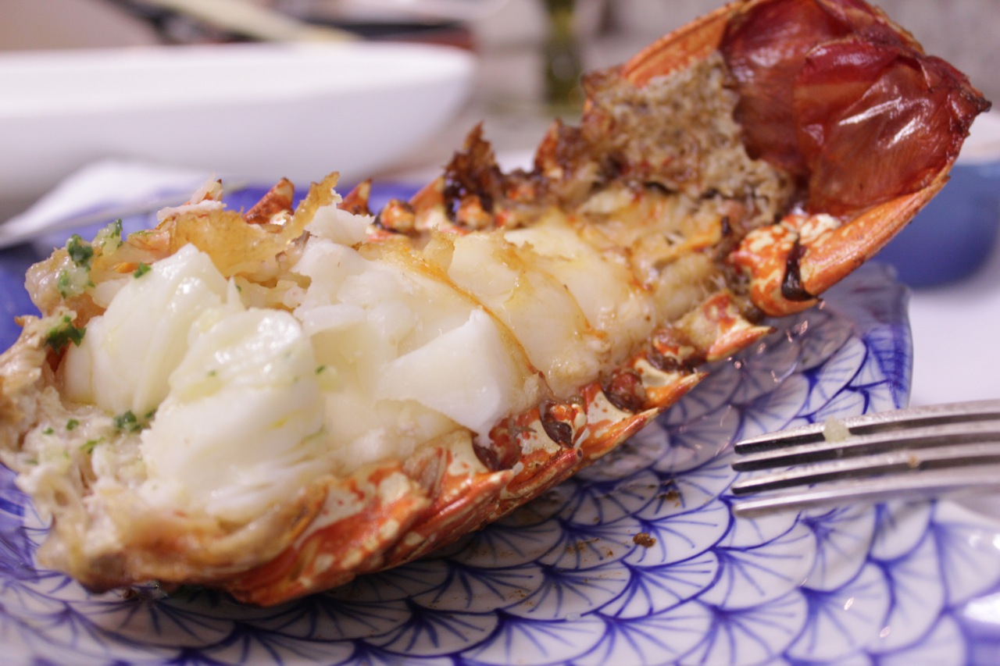

Comidas que pretendo comer um dia
Lagosta no azeite de olivia
Ingredientes: 
Duração 20min
Para a lagosta
1 cauda de lagosta com 300g
2 dentes de alho inteiros e descascados
1 colher de cafezinho de sal
Azeite de oliva (usamos 500ml)
1 limão para lavar a lagosta
Para o molho
1 colher de sobremesa rasa de salsa picada
1 dente de alho espremido
1 colher de sopa de manteiga com sal
Modo de Preparo
Tire a tripa da cauda e a cartilagem da barriga. Tente comprar a lagosta já sem a tripa.
Coloque na água com limão para lavar por 5 minutos
Enquanto isso, esprema 1 dente de alho e 1 colher de sopa de manteiga e coloque numa panelinha em fogo baixo. Espere o alho perfumar, coloque a salsa, espere mais um pouco e reserve. Este é o molho que você vai regar a lagosta quando estiver pronta.
Retire a lagosta da água com limão, escorra bastante, seque com papel toalha e espete um palito de churrasco de uma ponta a outra na cauda para que ela fique reta como mostra no filme.
Coloque azeite de oliva na panela, os dentes de alho inteiros e descascados e sal e espere esquentar. Coloque a cauda da lagosta com a casca para baixo (não deixe o azeite esquentar muito, senão, ao colocar a lagosta, ele vai espirrar muito).
Quando a casca ficar vermelha, espere um pouco, vire a carne para baixo, espere uns 2 minutos e vire a carne para cima outra vez.
Se certifique de que a lagosta esta cozida – corte com garfo e faca -, retire, regue com o molho e sirva imediatamente!
Personalidade que comeria comigo